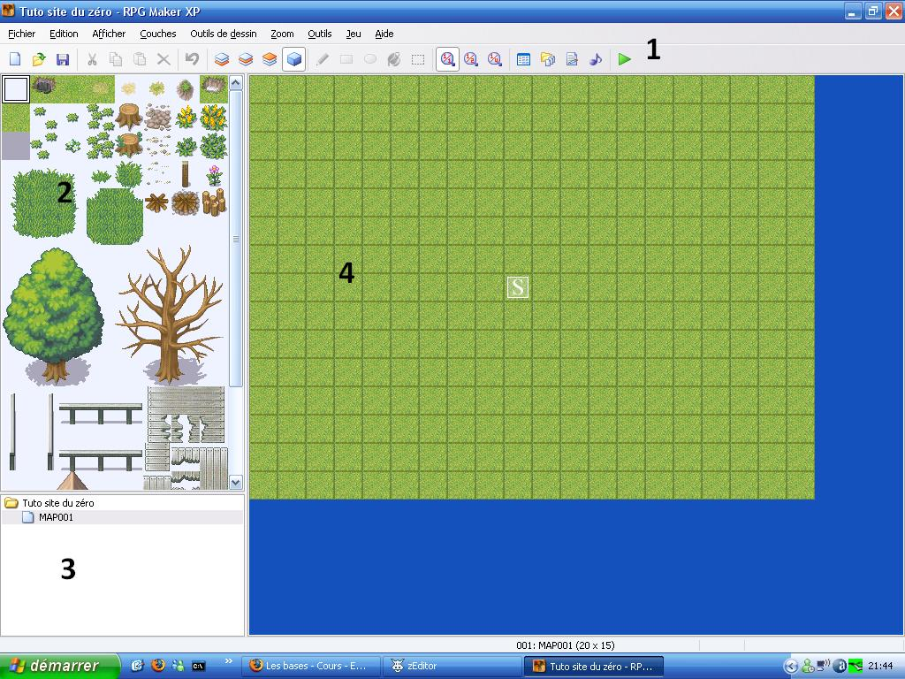
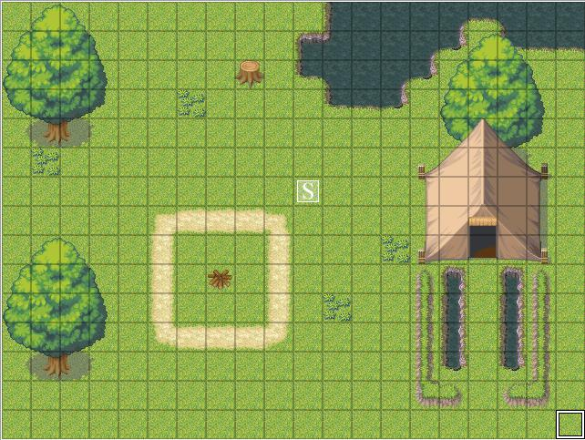
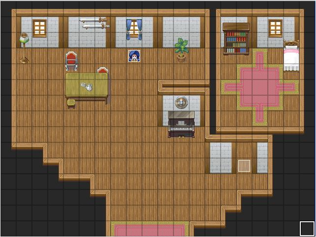
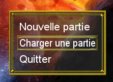
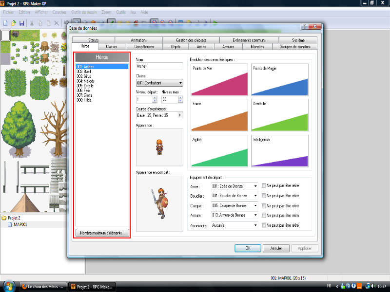

Bonjour à tous, les Zér0s : aujourd'hui, je vais vous apprendre à utiliser RPG Maker XP. Vous en avez peut-être déjà entendu parler, c'est un logiciel qui permet de créer un RPG (Role Playing Game) en 2D.
Qui n'a jamais rêvé de créer un jeu vidéo ? Pas beaucoup de monde, et grâce à ce logiciel, vous pourrez le faire sans pour autant savoir utiliser le C/C++, Java, etc.
Le logiciel est en français, et pas besoin d'être un génie de la programmation pour l'utiliser. ^^ Il permet de faire un jeu assez complet, à condition d'aimer les RPG. Bon : assez de bla-bla, commençons ! :pirate:
Je remercie ptipilou, Tizz et Pas un 0, un -1 ! pour la zCorrection et leur grande patience.
Il y en a sûrement qui se demandent "Mais qu'est-ce que c'est, un... RPG" ? o_O Eh bien dans ce chapitre, je vais vous dire ce qu'est un RPG, et vous parler également de RPG Maker XP. Ne vous inquiétez pas, ce chapitre n'est qu'un "amuse-bouche". :D
Bon : "je" vais vous définir le RPG (Role Playing Game), mais comme je suis un tout petit peu flemmard, :-° je vais copier une définition qui me paraît convenir. Je l'ai trouvée dans un autre tutoriel du Site du Zér0, à savoir le tutoriel de Lokk, Créer un RPG multijoueur en PHP (ce tuto a été supprimé depuis). Revenons à nos moutons, voici la définition du RPG selon Lokk :
Citation : Lokk
Pour ceux qui ne les connaîtraient pas, les RPG sont des jeux où le joueur fait progresser un personnage qui interagit avec d'autres personnages (PJ, PNJ) et son environnement (objets, lieux...).
Un RPG est caractérisé par un système de progression du personnage spécifique, qui permet de gagner de l'expérience (en combattant ou en réalisant des quêtes), ce qui engendre l'évolution du personnage, c'est-à-dire un gain de nouveaux pouvoirs, de compétences, et l'amélioration des caractéristiques du "perso".
De plus, ce "perso" peut interagir avec d'autres personnages, qu'ils soient gérés par des joueurs (PJ), ou bien par l'ordinateur (PNJ).
L'environnement du personnage est aussi extrêmement important, car il va lui permettre d'effectuer toutes ses actions (déplacements, entrer dans un bâtiment, récupérer un objet...).
Je pense donc en avoir fini avec la définition globale d'un RPG. Mais vous vous doutez que ce n'est pas si simple. Il existe en effet plusieurs types de RPG, que nous allons voir tout de suite.
Et maintenant, les différents types de RPG (toujours brillamment exposés par Lokk :) ) :
Citation : Lokk
Eh oui, il existe plusieurs types de RPG ! Nous allons voir les principaux ainsi que leurs caractéristiques. Vous êtes prêts ? C'est parti !
Tactical RPG (ou T-RPG) est un type de RPG où le gameplay est basé sur les décisions tactiques que le joueur doit prendre au cours des combats. Il peut être considéré comme un mélange entre jeu de rôle traditionnel et jeu de stratégie au tour par tour.
Action RPG (ou A-RPG) : le principe du jeu est globalement celui d'un jeu de rôle ou d'un jeu d'aventure, le joueur incarne un seul personnage et le jeu se passe en temps réel. Le joueur évolue librement dans un monde, mais a certains objectifs à accomplir pour avancer dans l'aventure. De plus, il n'y a pas de combats aléatoires : les ennemis sont directement visibles sur l'écran de jeu, les combats s'engagent dès que l'ennemi est à portée d'épée.
MMORPG (de l'anglais Massively Multiplayer Online Role-Playing Game) : le concept est très simple, c'est un RPG qui se joue sur Internet avec un grand nombre de joueurs connectés simultanément.
Le logiciel RPG Maker XP permet de créer des Tactical RPG, les combats seront donc au tour par tour, mais pour ceux qui voudront faire des Action RPG, je vous donnerai un lien vers un site qui vous permettra de faire de votre jeu un Action RPG. Pour faire un MMORPG avec ce logiciel, ça doit être possible, mais ça, je ne sais pas faire.
Bon, pour son histoire, je ne vais pas non plus me casser beaucoup la tête, :-° voici ce que dit Wikipédia sur RPG Maker XP.
Citation : Wikipédia
RPG Maker est une série de logiciels développée tout d'abord par ASCII (compagnie japonaise) puis par Enterbrain (compagnie japonaise), permettant de créer des jeux vidéo (principalement des jeux de rôles (RPG) mais également d'autres types de jeux vidéo) en 2 dimensions de manière simple et évitant ainsi d'avoir recours à des techniques plus avancées telles que l'utilisation de langages informatiques, l'utilisateur final n'a donc pas besoin de savoir programmer pour créer des jeux.
La plupart des versions comprennent un éditeur de carte, un langage de script simple pour scripter des événements ainsi qu'un éditeur de batailles. Elles incluent toutes des textures (Tilesets ou chipsets), des personnages et des événements initiaux qui peuvent être utilisés pour créer les jeux. Une des caractéristiques des versions PC par rapport aux versions console est la possibilité de créer ses propres éléments graphiques et ainsi de personnaliser son jeu. De nombreux sites web proposent ce genre d'éléments personnalisés ou encore des éléments tirés d'autres jeux (rip).
Mais ce n'est pas fini. Là, on vous parlait seulement de RPG Maker, mais pas de RPG Maker XP, et encore une fois nous pouvons dire merci à Wikipédia, alors tous en choeur "Merci Wikipédia". :D
Citation : Wikipédia
RPG Maker XP Traduite en français par Bodom-Child - Rabbi, cette version dispose de chipsets plus aboutis que les versions précédentes, avec plus de variété. Cette version inclut également une troisième couche pour les chipsets ainsi que la gestion d'un format d'image gérant la vraie transparence (couche alpha). Les ressources des anciennes versions ne peuvent toutefois pas être utilisées avec la version XP sans retouches graphiques. Cette dernière version sur PC permet d'obtenir, en proposant une résolution de 640 x 480 pixels de côté, une meilleure qualité d'image que dans les versions 2000 et 2003 qui n'en offrent que la moitié.
Cette version intègre également un système de scripts (provenant du langage Ruby) qui permet de personnaliser plus facilement son jeu. Des scripts sont disponibles gratuitement sur Internet.
Maintenant, vous ne pourrez plus dire que vous ne savez pas ce qu'est un RPG (à moins que l'on vous ait fait perdre la mémoire :lol: ). Non, plus sérieusement, maintenant vous savez qu'il y a plusieurs types de RPG et que le logiciel est japonais.
Bon, passons à la suite, les bases et le téléchargement. :zorro: (Ne me demandez pas pourquoi j'ai mis ce smiley.)
Après un premier chapitre intense en péripéties ( :lol: ), nous allons commencer à découvrir le logiciel tout en douceur après l'avoir téléchargé, cela va de soi. :p Les fonctions du logiciel sont très pratiques et très bien regroupées, normalement vous ne devriez pas vous perdre. Alors en avant !
RPG Maker XP est divisé en deux parties : la première est le logiciel ; la seconde, la bibliothèque du jeu, appelée RTP ou RGSS. C'est avec cette bibliothèque que seront installées toutes les ressources de base du logiciel (images, musiques...).
Voici les liens : Télécharger RPG Maker XP. Pour ceux qui ne connaîtraient pas l'anglais, je vous traduis la licence : Libre d'essayer ; 60.00 $ pour acheter (l'acheter maintenant).
Après avoir procédé au téléchargement et à l'installation, cliquez sur Nouveau, choisissez ensuite le nom de votre jeu ainsi que son dossier. Vous devriez ensuite avoir devant vos yeux (ébahis ^^ ) ça :

J'ai divisé le logiciel en quatre grandes parties que je vais vous expliquer.
1) La barre d'outils : elle est présente dans à peu près tous les logiciels, vous retrouverez donc des fonctions classiques (Enregistrer, Copier, Ouvrir, etc.). Je vous expliquerai les autres fonctions plus en détail après.
2) La fenêtre du chipset (décor de la carte) : c'est ici que vous choisirez les décors que vous placerez sur la carte (un arbre, une table, etc.). Le décor est découpé en cases, tout comme la carte d'ailleurs.
3) « L'arbre du jeu » : c'est là que seront écrites toutes les cartes de votre jeu. Vous n'aurez qu'à cliquer sur l'une d'entre elles pour l'afficher ou la modifier.
4) La fenêtre principale : à cet endroit, vous placerez vos décors (si vous voulez un environnement diabolique ( :diable: ) ou paradisiaque ( :ange: ), c'est ici que vous allez le créer). :p
Revenons un instant sur la barre d'outils : comme je vous l'avais promis, je vais vous expliquer tous les boutons inconnus.
La barre d'outils
Les trois premiers boutons sont les boutons des couches. C'est en fonction de la position du décor que vous allez choisir une des couches (la couche 3 est supérieure aux couches 2 et 1, et la 2 est supérieure à la 1). Donc, par exemple, si vous voulez mettre une tasse sur une table, vous mettrez la table en première ou deuxième couche (la deuxième serait le mieux), et la tasse en deuxième ou troisième. Sinon, la tasse sera sous la table au lieu d'être au-dessus. Pour les graphistes, on peut voir ça comme un système de calques.
Le cube, c'est la touche pour les événements, c'est grâce à ce bouton que vous mettrez les actions. J'en reparlerai un peu plus tard dans la suite du cours.
Après, les cinq autres boutons sont les outils de dessin (classiques) : pinceau, rectangle, ellipse, pot de peinture et outil de sélection ; donc jusque-là, ça va. ^^
Ensuite c'est le zoom ; 1/1 c'est donc le plus près, ½, plus loin et ¼, le plus éloigné.
Le bouton suivant, c'est la base de données. C'est grâce à cette touche que vous choisirez le nom du héros, son apparence, mais aussi les monstres, les armes, etc. La partie II du tutoriel sera consacrée à son étude.
Après, c'est le bouton importer, c'est avec lui que vous pourrez mettre vos propres musiques et images.
: ça c'est pas touche ! o_O Ce sont les codes de fonctionnement du jeu dans un langage assez incompréhensible, pour ceux qui ne le connaissent pas (le langage RUBY, RUBY original un peu modifié) ; alors si vous enlevez un truc, ça risque de ne plus marcher très bien. Dans une annexe, je vous regrouperai des scripts trouvés sur Internet pour vous permettre de modifier quelques parties de votre jeu. Vous pourrez également trouver facilement des scripts sur le net.
Musique : là, vous pourrez écouter toutes les musiques du logiciel. Ainsi que celles importées.
Et enfin lancer le jeu : quand votre jeu est fin prêt à être testé, cliquez ici.
Lorsque vous créez un projet RMXP, le logiciel crée automatiquement plusieurs fichiers et dossiers, voici à quoi ils servent :
Dès que vous enregistrez un jeu, cela sera toujours comme ça : il y aura TOUJOURS ces fichiers et dossiers (excepté le fichier de sauvegarde qui n'apparaîtra que si vous sauvegardez votre partie, logique me direz vous, mais il faut le préciser).
Après la découverte générale des fonctions du logiciel et des divers fichiers créés par le logiciel pour chaque projet, nous pouvons désormais commencer la création de notre jeu. Alors allons gaiement au chapitre suivant qui vous enseignera l'art difficile qu'est la création de carte !
Dans ce chapitre, nous allons créer et modifier des cartes. Le logiciel est simple, ça ne devrait donc pas poser de gros problèmes. Pour l'instant, vous serez obligés d'utiliser les chipsets du logiciel, mais plus tard, dans un autre chapitre, je vous dirai comment en importer et, dans une annexe, je vous indiquerai les adresses de sites où vous trouverez votre bonheur. :soleil: Alors, pas de panique si vous n'aimez pas ceux du jeu.
Quand vous avez cliqué sur "Nouveau", vous avez remarqué qu'une carte s'est ajoutée dans « l'arbre du jeu ». Elle s'appelle par défaut MAP001, et elle utilise le chipset* « plaine » (notez qu'on ne peut avoir qu'un chipset par carte). Pour changer le chipset, faites un clic droit sur le nom de la carte et cliquez sur Propriétés de la carte.
Une fenêtre devrait s'ouvrir ; ça devrait d'ailleurs être celle-ci.
Nom : c'est pour changer le nom, évidemment ! :p Chipset : pour choisir le chipset parmi ceux disponibles dans la liste (50). Largeur et hauteur : pour la taille de la carte.
Musique, c'est pour choisir la musique de la carte et le fond sonore pour le bruit de fond (vent, eau, foule, etc.).
Groupes de monstres permet d'ajouter des monstres à votre carte. Pour cela, double-cliquez dans la première ligne du « cadre » et choisissez le monstre que vous voulez. Le taux de combat vous permet de définir au bout de combien de pas (en moyenne) les monstres vont apparaître.
Bon : maintenant, vous pouvez créer votre carte selon votre envie, mais n'oubliez par l'histoire des couches ! La première est la plus basse et la troisième la plus haute.
Une fois la carte créée selon votre goût, enregistrez votre début de jeu, puis cliquez sur la flèche verte (lancer le jeu) pour voir ce que ça donne. Moi, j'ai fait une petite forêt sympa. ^^
C'est que vous avez tout mis sur la première couche ; déplacez donc les objets, arbres, etc. en deuxième ou troisième couche (ne mettez que le sol en première couche).
Modifier certains décors
Un petit conseil : vous pouvez "transformer" les décors ; il suffit qu'il soit « multiple » (une table est multiple quand elle est constituée de plusieurs carrés). Je vous montre : voici la table dans le chipset FORTERESSE(INT).
Et voici deux modèles de tables faits à partir des "morceaux" de cette table :
Comme vous le voyez, la table en bas est plus longue que la table d'origine ; celle du haut, elle, est plus large. Vous pouvez faire plein d'agencements de ce type. Trouvez les meilleurs à faire, certains décors dans le chipset sont faits exprès pour faire ce genre de choses, à vous de les trouver.
Les murs
Encore une chose sur les chipsets. Vous aurez remarqué qu'il y a des murs, mais il ne sont qu'« horizontaux ». Pour faire des murs verticaux, il y a cet outil dans TOUS les chipsets (INT), le voici :
(ici il y en a trois, mais ça dépend du type d'endroit : si c'est un sous-sol, une maison, etc.). Vous le trouverez généralement tout en haut des chipsets.
QUOI !!?? o_O :o On peut faire des murs avec ÇA ?
Eh oui, c'est L'OUTIL pour faire les murs. Quand vous le mettez sur la carte, vous pouvez ensuite faire des murs. Démonstration :
Voilà : ça, c'est une de mes cartes. Comme vous le voyez, tous mes murs sont construits avec, mais vous n'êtes absolument pas obligés de l'utiliser, vous n'aurez pas de punition :D (mais c'est très recommandé). Comme vous pouvez le voir, cet outil est aussi utilisé pour les murs horizontaux.
Pour ajouter une nouvelle carte, faites un clic droit dans « l'arbre du jeu », faites un clic sur Ajouter une carte et définissez les paramètres de la carte (taille, nom, etc.). Vous pouvez créer autant de cartes que vous voulez.
MAP003 est une sous-carte de la MAP001, et MAP002 est « indépendante » des deux autres. Notez que vous pouvez toujours faire un glisser-déposer avec celle-ci.
Il y a cependant un problème : on ne peut pas naviguer entre les deux cartes. :waw: C'est embêtant, parce qu'un jeu à une carte, c'est un peu nul. :D Mais pas de panique, attendez la suite du cours...
Alors, qu'est-ce que vous pensez de votre premier jeu ? Hein ? Quoi ? Je n'entends pas bien ? Ah, il est nul, oui, vous avez raison. :p C'est normal, on ne peut pas naviguer entre les cartes, et il n'y a pas de PNJ ; mais tout vient à point à qui sait attendre. ^^
Bienvenue dans la partie plus technique de RMXP, les événements permettront de rendre votre jeu dynamique. Sans les événements, impossible de naviguer entre les cartes, de parler à des PNJ, de faire des quêtes ou même une histoire. Bref, ils constituent la colonne vertébrale de tout projet ! J'ai décidé de séparer la partie événement en deux : les événements simples et les événements indispensables (pour ne pas dire compliqués :p ). Commençons en douceur avec les événements simples !
Pour utiliser les événements, il faut cliquer sur le bouton événement. Vous vous souvenez duquel il s'agit ? Non ? Ah ces jeunes ! :p Alors le voici :
. Lorsque que vous cliquez dessus un quadrillage apparaîtra sur votre carte, voici ce que cela donne sur la mienne :

Chaque carreau est une place pour un et un seul événement. Par défaut un seul événement est présent sur la première carte créée : l'événement S, c'est sur cet événement que votre équipe débutera le jeu (S comme start en anglais). Sachez que vous pouvez faire un glisser-déposer avec. Vous pouvez le supprimer avec la sacro-sainte touche Suppr, ou bien d'un clic droit, « Supprimer l'événement ». Pour le faire réapparaître, un clic droit et « Placer la position de départ de l'équipe ».
Bien, maintenant créons un événement ! Pour cela double-cliquez sur la case qui accueillera votre événement ; moi, je trouve qu'il fait froid, je vais donc cliquer sur les bûches pour y mettre un feu ; voici ce qui apparaît :
En commençant de haut en bas : Nom : c'est le nom de l'événement. :waw: Le nom n'a pas d'importance, d'ailleurs je ne les nomme que très rarement, ils sont nommés automatiquement suivant cette logique : EV001, EV002. Page : vous le verrez dans le chapitre suivant. Conditions de déclenchement : elles seront vues dans le chapitre suivant. Apparence : vous pouvez choisir l'apparence de l'événement (tu nous prends pour des demeurés ??. Non non, je pars simplement de zéro :p ). Vous pouvez faire revêtir moult apparences à votre événement : un homme, un monstre, un objet... Mode de déplacement : cela vous permet de choisir si l'événement va vous suivre, suivre un trajet, rester sur place ou bien se déplacer de façon aléatoire. Pour que l'événement marche de façon « normale », mettez la vitesse en modérée ou normale, et la fréquence en la plus haute. Options est assez explicite : si vous mettez animer à l'arrêt, l'événement s'animera même s'il ne bouge pas (pour un personnage, celui-ci marchera sur place, mais pour un objet comme une fontaine, celle-ci sera animée quand elle ne bouge pas ; en même temps, qui a vu une fontaine bouger ?), direction fixe fera en sorte que l'événement ne change pas de direction même s'il va à gauche, à droite, en haut ou en bas. Mode fantôme, anciennement appelé traversable (qui est plus explicite à mon goût), l'événement sera donc traversable. Au-dessus de tout est assez clair je pense.
Et le grand cadre à droite, c'est LÀ que vous mettrez le code de l'événement.
Nous allons maintenant afficher notre premier événement, il ne fera rien de particulier. Ce sera simplement une image de feu animé. Pour afficher mon feu, je vais prendre l'apparence feu (184-Light01) et choisir animer à l'arrêt ; voici ce que ça donne en vidéo (c'est beau, la technologie
) : Vidéo du feu animé (Désolé pour la qualité, c'est dû à la conversion du .avi vers le .flv.)
Pour pouvoir mettre quelque chose, double-cliquez dans le cadre.
Un nouvelle fenêtre va s'afficher :
C'est là que vous pouvez choisir tous les événements à votre disposition (il y a trois onglets).
Afficher un message
Après avoir mis un bon feu, attaquons-nous maintenant aux PNJ. Je vais pour cela placer un événement n'importe où (évitez l'eau quand même :lol: ). Je vais choisir comme personnage 012-Lancer04. Son mode de déplacement consistera en des mouvements aléatoires et sa fréquence sera la plus haute (pour les déplacements normaux). Laissez les autres options par défaut. Double-cliquez maintenant dans le grand cadre à droite, une fenêtre devrait apparaître ; cliquez sur Afficher un message :
Citation : Numéro
Afficher un message :[1];{1};(1)
Voici ce qui devrait apparaître :
(La partie « floutée » sera vue plus tard.) Si vous n'avez pas les commandes de messages qui s'affichent, ce n'est pas grave, elles seront tout de même utilisables. Vous voyez une flèche noire au-dessus du cadre pour écrire votre texte. Elle ne devra pas être dépassée sous peine de voir son texte coupé (vous pouvez tout de même le faire dépasser de quelques caractères) :
On va faire en sorte que le personnage lui dise bonjour avec son nom, pour cela utilisez la commande \N[1] :
Bonjour \C[3]\N[1]\C[0], comment allez-vous ?
J'ai également choisi de colorer le nom du personnage en vert. Voici le résultat en vidéo : Vidéo personnage animé
Proposer un choix
Maintenant que le PNJ dit bonjour, faisons en sorte qu'il pose une question à notre héros. Comme par exemple : Aimez-vous les pommes ? (C'est le premier exemple bidon qui m'est venu. :lol: ) Pour cela cliquez sur proposer un choix au lieu de afficher un message :
Citation : Numéro
Proposer un choix :[1];{1};(2)
Voici comment je nomme les différentes parties d'une proposition de choix :
Alors, si nous répondons oui, elle nous dira Moi aussi, c'est mon fruit préféré ! et si nous répondons non, C'est votre choix ! :
Citation : Code événement
<>Message : Aimez-vous les pommes ? <>Proposer un choix : Oui, Non : Si [Oui] faire : <>Message : Moi aussi, c'est mon fruit préféré ! <> : Si [Non] faire : <>Message : C'est votre choix ! <> : Fin <>
Je vous ne remet pas de vidéo, je suppose que vous êtes assez grands. Mais comme je suis d'une grande bonté, je mets des images (
non, non, ne me remerciez pas, c'est tout naturel :D ) :
Comme vous pouvez le voir sur le schéma, en fonction de ce que l'utilisateur choisit le message sera différent. Lors de la création de la proposition de choix vous pouviez choisir quel choix sera activé à l'annulation. Mais vous pouvez en créer un exprès pour cela :
Citation : Code événement
<>Message : Aimez-vous les pommes ? <>Proposer un choix : Oui, Non : Si [Oui] faire : <>Message : Moi aussi, c'est mon fruit préféré ! <> : Si [Non] faire : <>Message : C'est votre choix ! <> : Si Annulation faire : <>Message : Vote blanc donc... <> : Fin <>
Vous avez pu également remarquer que j'ai édité le message initial, il suffit pour cela de faire un clic droit sur un événement et de choisir : Éditer cette commande. Sachez que les propositions de choix sont « imbricables » les unes dans les autres. Imaginons maintenant que quand notre héros répond « non » à la question, elle lui demande ensuite s'il aime les poires. Cela donnera (essayez de trouver par vous-mêmes :p ) : J'ai coloré la seconde proposition de choix en bleu, car sur le SdZ les tabulations ne marchent pas dans les balises citations.
<>Message : Aimez-vous les pommes ? <>Proposer un choix : Oui, Non : Si [Oui] faire : <>Message : Moi aussi, c'est mon fruit préféré ! <> : Si [Non] faire : <>Message : Aimez-vous les poires ? <>Proposer un choix : Oui, Non : Si [Oui] faire : <>Message : Moi aussi, c'est mon deuxième fruit préféré ! <> : Si [Non] faire : <>Message : Même en tarte ? <> : Si Annulation faire : <>Message : Vote blanc donc... <> : Fin <> : Si Annulation faire : <>Message : Vote blanc donc... <> : Fin <> </citation>
Voilà ce que ça donne en schéma : (Cliquez pour agrandir)
Ce principe est utilisé pour les longues propositions de choix où l'on est obligé d'utiliser le dernier choix comme bouton Suivant :
Citation : Code événement
<>Message : que voulez-vous ? <>Proposer un choix : Potion, Elixir, Antidote, suite : Si [Potion] faire : <>Objets : [Potion] + 1 <> : Si [Elixir] faire : <>Objets : [Elixir] + 1 <> : Si [Antidote] faire : <>Objets : [Antidote] + 1 <>Commentaire : vous voyez, la proposition de choix suivante est incluse dans le dernier choix : : de la première proposition de choix. <> : Si [suite] faire : <>Proposer un choix : Épée, bouclier, clef, feuille : Si [Epée] faire : <> : Si [bouclier] faire : <> : Si [clef] faire : <> : Si [feuille] faire : <> : Si Annulation faire : <>Commentaire : si vous n'avez aucune autre proposition de choix après annulation, vous : : pouvez laisser le champ vide, sinon il sera question d'interrupteur, : : et ça, je vous l'expliquerai plus tard. : Fin <> : Si Annulation faire : <> : Fin <>
Si vous ne faites pas ça, quand le joueur sélectionnera une option, il devra passer toutes les propositions de choix suivantes, même s'il ne veut pas les voir. Dans l'exemple des pommes, des poires et des scoubidoubidou AH la question aurait été posée même si le joueur avait répondu « oui » à la première question.
Maintenant que nous avons un PNJ qui pose des questions nous allons l'éliminer
nous pouvons nous occuper de la téléportation. Cette tente ne vous intrigue pas ? Essayez d'y rentrer, que se passe-t-il ? Rien, c'est normal ! La carte n'a pas été créée et aucun lien ne les lie. Commencez déjà par créer la tente. Pour cela ajoutez une nouvelle carte et suivez les conseils du chapitre précédent. Voici la mienne (comme il n'existe pas de chipset tente, j'ai pris ville INT) :

Elle est plutôt spacieuse
. Maintenant nous allons faire en sorte que l'on puisse naviguer entre ces deux cartes. Retournez sur la carte plaine, et placez un événement sur l'entrée de la tente. Mettez-le sans apparence (excepté si vous voulez mettre une porte - cf. plus bas), et choisissez la condition de déclenchement : Au contact du héros. Maintenant ajoutez du code en double cliquant et choisissez téléporter l'équipe :
Citation : Numéro
Téléportation :[2];{1};(1)
Ensuite, il faut choisir où vous voulez vous téléporter.
La solution la plus pratique, c'est sélectionner l'endroit. Pour cela, cliquez sur la petite flèche et suivez ces instructions :
N'oubliez pas de cliquer sur Ok. :p L'autre méthode, c'est avec des variables mais les variables, je vous en parlerai plus tard, et puis je n'ai encore jamais utilisé les variables pour la téléportation.
Donc, grâce à ça, vous pouvez faire un jeu de 132 ou même de 458 cartes ; maintenant, on peut naviguer entre elles, ce qui est indispensable pour un jeu, sauf si la carte est IMMENSE.
La porte
Nous allons maintenant nous occuper de la porte de la chambre ! Nous allons faire en sorte que lorsque le héros sera devant et appuiera sur Entrée, celle-ci s'ouvre en s'animant. Créez un événement à la base de la porte et choisissez comme apparence une porte fermée (170-Door01 par exemple). Maintenant insérez la commande :
Citation : Numéro
Déplacer/Modifier l'événement : [2];{1};(9)
. À présent, faites Modifier l'apparence (le 5e en partant de la fin) et prenez l'image de porte suivante ; ensuite, choisissez Attend (le dernier de la première colonne), répétez cette opération pour toutes les images de la porte. Une fois ceci fait, rajoutez à la fin un Modifier l'apparence et mettez-en aucune. Validez, ensuite ajoutez la commande :
Citation : Numéro
Effacer cet événement : [1];{2};(5)
. Validez et c'est prêt ! Voici le code pour ceux qui n'auraient pas suivi (c'est une image, je suis pris d'une soudaine paresse :-° ) :
Voici le résultat en vidéo : Vidéo téléportation Voyez, je n'ai pas oublié la double téléportation ! Pour la porte, cette technique d'animation peut également servir pour un coffre qui s'ouvre, une statue qui s'anime...
Maintenant que nous pouvons accéder à la tente, pourquoi ne serait-elle pas celle d'un marchand ambulant ? Un mage mystique vendeur de bibelots ! Commençons. :pirate:
Ajouter et retirer
D'abord, la solution qui peut paraître simple au premier abord mais totalement inutile pour un magasin, c'est utiliser les Ajouter / Retirer.
Ils servent à quoi, alors ?
Ils permettent par exemple de faire en sorte que le héros reçoive un cadeau de sa grand-mère, qu'il trouve un trésor dans un coffre... Il y a six « Ajouter / Retirer » :
Citation : Numéro
Monnaie : [1];{3};(5)
Objets : [1];{3};(6)
Armes : [1];{3};(7)
Armures : [1];{3};(8)
Points d'expérience : [1];{2};(5)
Compétence : [1];{2};(8)
Ajouter / retirer monnaie
Pour la monnaie, vous devez choisir si vous voulez en ajouter ou en retirer, et combien (c'est soit défini, soit contenu dans une variable).
Ajouter / retirer objets, armes, armures
Pour les trois, c'est le même principe : vous devez choisir entre ajouter et retirer et choisir quel objet, arme ou armure vous voulez ajouter ou retirer, ainsi que la quantité (elle est soit définie : 1, 2, 3... ou alors c'est en fonction d'une variable).
Ajouter / retirer points d'expérience
C'est le même principe que les autres, sauf que là, il faut choisir à qui vous voulez donner ces points d'expérience (à toute l'équipe ou à un personnage en particulier).
Ajouter / retirer compétence
Ici, il faut choisir à qui vous voulez ajouter ou retirer une compétence et laquelle.
Appeler un magasin
La commande
Citation : Numéro
Appeler un magasin :[3];{1};(2)
vous permet d'ouvrir un magasin : libre à vous de choisir les produits qui y seront vendus. C'est celle-ci que nous utiliserons pour notre marchand. Pour ajouter des produits, double-cliquez dans la zone vide sous le produit précédent. Le magasin peut également servir pour vendre ses objets. Voici le code puis le résultat :
Comme dans tout langage (C, C++, etc.), il y a des commentaires. Ils servent à vous repérer dans votre « code ». Au début, vous n'en aurez pas besoin, mais une fois que vos événements seront plus grands qu'« Afficher un message » (exemple : changer la classe du héros en fonction de son niveau et de son ancienne classe, ou alors faire un sort de téléportation, etc.), vous aurez besoin de commentaires pour vous repérer dans votre code. Les commentaires sont invisibles pour le joueur, vous seuls pouvez les voir en cliquant sur l'événement. Pour insérer un commentaire, allez dans le premier onglet, et c'est la septième commande
Citation : Numéro
Commentaire : [1];{1};(7).
Citation : Code event
<>Message : Êtes-vous gentil ou méchant ? <>Proposer un choix : Gentil !,Méchant ! : Si [Gentil!] faire : <>Message : Ah, tenez, je vous offre une potion ! <>OBJETS : [Potion] + 1 <>Commentaire : donne une potion si le joueur est gentil. <> : Si [Méchant !] faire : <>Message : Oh, au secours!!!! <> : Fin <>
Les étiquettes
Les étiquettes, elles, servent à faire « précédent » quand vous faites plusieurs fois proposer un choix dans un même événement. Pour vous en servir, il faut placer une étiquette, utilisez pour ça la commande Mettre une étiquette* avant la première proposition de choix, et dans un choix d'une autre proposition de choix, utilisez la commande Sauter vers une étiquette**.
Citation : Numéro
*Mettre une étiquette[1];{2};(7).
Citation : Numéro
**Sauter vers une étiquette[1];{2};(8).
Citation : Code event
Message : que voulez-vous ? <>Mettre une étiquette : Début <>Proposer un choix : Potion, Elixir, Antidote, suite : Si [Potion] faire : <>Objets : [Potion] + 1 <> : Si [Elixir] faire : <>Objets : [Elixir] + 1 <> : Si [Antidote] faire : <>Objets : [Antidote] + 1 <> : Si [suite] faire : <>Proposer un choix : Epée, bouclier, clef, Précédent : Si [Epée] faire : <> : Si [bouclier] faire : <> : Si [clef] faire : <> : Si [Précédent] faire : <>Sauter vers l'étiquette : Début <> : Si Annulation faire : : Fin <> : Si Annulation faire : <> : Fin <>
Lorsque le joueur validera l'option précédent,
Citation : Code event
Proposer un choix : Potion, Elixir, Antidote, suite <>Mettre une étiquette : Début [...] Si [Précédent] faire : <>Sauter vers l'étiquette : Début <>Commentaire : l'événement reviendra au premier choix. <>
Elles peuvent être utilisées pour autre chose, mais c'est l'exemple le plus simple.
Maintenant que vous avez appris les bases des événements, nous pouvons attaquer la partie suivante sur les événements indispensables. Les deux chapitres sur les événements seront succincts, je ne listerai pas toutes les fonctions disponibles, vous êtes assez grands pour découvrir par vous-mêmes. Cependant je compte faire une annexe rapide qui listera toutes les fonctions, pour ceux qui auraient la version anglaise.
On se retrouve dans le prochain chapitre ? Si ce cours a été trop dur pour vous, reposez-vous ! Je ne tiens pas à avoir des morts sur les bras ! Quoique, rencontrer le lieutenant Mc Taylor en vrai, ça peut être cool. :p
J'espère que vous êtes en forme ? Parce que vous allez en baver ! Ce que vous allez lire sera sans doute la pire chose que vous aurez vue dans votre misérable existence ! Vous allez me faire 100 pompes et que ça... Oups... pardon, un instructeur militaire qui passait par là. :-° Mais je ne me suis pas laissé faire ! Bon : ici, nous allons attaquer les événements indispensables, alors ouvrez bien vos oreilles parce qu'ils sont... indispensables. :lol: Ils vous serviront pour TOUS, je dis bien TOUS vos jeux ! Alors en avant ! :pirate:
Imaginons maintenant que la fille aux pommes (je l'ai nommée comme ça :p ) donne une pomme au héros s'il les aime et 10 pièces s'il ne les aime pas (on va oublier les poires) ; maintenant que vous avez vu les Ajouter et retirer, vous devriez me faire le code sans problème !
Citation : Code événement
<>Message : Aimez-vous les pommes ? <>Proposer un choix : Oui, Non : Si [Oui] faire : <>Message : Alors tenez, voici une pomme ! <>Objets : [Fruit] + 1 <> : Si [Non] faire : <> Message : Alors voici 10 pièces pour que vous achetiez votre fruit préféré ! <>Monnaie : + 10 <> : Fin <>
J'espère que vous l'avez fait tout seuls sinon :
! Bon, trêve de plaisanterie, c'est bien beau d'avoir une gentille madame, mais elle est un peu gourde : on peut lui reparler 100, 1000... fois elle nous reposera inlassablement la même question et nous donnera toujours quelque chose. Pour faire bien, elle devrait nous offrir un cadeau et à la deuxième fois nous dire qu'elle l'a déjà fait ! Et c'est là qu'interviennent les conditions et les interrupteurs !
Mais qu'est ce qu'un interrupteur, c'est pour allumer la lumière ? :lol: Et les conditions ?
Vous ne croyez pas si bien dire car comme ceux qui allument et éteignent vos lumières, les interrupteurs de RMXP ont deux positions : activé et désactivé. Pour ceux qui font de la programmation, c'est comme les variables booléennes.
Pour gérer les interrupteurs, cliquez sur
Citation : Numéro
Gestion des interrupteurs[1];{3};(1)
. Là, vous pourrez définir le nom que vous voulez donner à votre interrupteur et choisir sa position. On utilise cette option après une condition pour changer l'interrupteur de position.
Les conditions, elles, permettent de faire certaines actions si une condition est remplie. Nous allons créer à nouveau notre événement, supprimez donc tout le code s'y trouvant. Maintenant ajoutez une condition, pour cela cliquez sur :
Citation : Numéro
Condition [1];{2};(1).
Voici ce qui doit apparaître :
Nous allons créer une condition en fonction d'un interrupteur, sélectionnez donc « interrupteur », choisissez dans la liste le premier interrupteur et donnez-lui un nom comme suit :
(Vous pourrez créer des interrupteurs comme cela tout le temps.)
Validez et sélectionnez désactivé pour l'interrupteur, vérifiez aussi que pour les conditions la dernière option (Exécuter d'autres commandes si la condition n'est pas rencontrée) est cochée sinon la fille aux pommes sera muette une fois son cadeau fait.
Voici le code que vous devriez obtenir :
Citation : Code événement
<>Condition : si l'interrupteur [0001:Pomme] est désactivé <> : Sinon <> : Fin <>
Comme l'interrupteur est désactivé par défaut, c'est le premier « cadre » qui sera exécuté..
Le premier cadre ?? o_O
Voici les « cadres » :
Et comme c'est le premier cadre qui va être exécuté, c'est ici que l'on va mettre le code du début du chapitre ; donc, dans le deuxième on va mettre le message disant qu'il ne faut pas abuser : :p
Citation : Code événement
<>Condition : si l'interrupteur [0001:Pomme] est désactivé <>Message : Aimez-vous les pommes ? <>Proposer un choix : Oui, Non : Si [Oui] faire : <>Message : Alors tenez, voici une pomme ! <>Objets : [Fruit] + 1 <> : Si [Non] faire : <> Message : Alors voici 10 pièces pour que vous achetiez votre fruit préféré ! <>Monnaie : + 10 <> : Fin <> : Sinon <>Message : Profitez bien de mon cadeau ! <> : Fin <>
Exécutez ce code, que se passe-t-il ?
Hé, ça n'a rien changé ! Tout ton baratin pour la même chose ! ESCROC !
Avant que vous me fusilliez, j'ai omis (volontairement, vous me prenez pour qui ? :p ) un détail capital. C'est normal que rien ne change puisque l'interrupteur est toujours désactivé : la condition ne pourra donc changer ; voici le code complet (notez la commande rouge en plus) :
Citation : Code événement
<>Condition : si l'interrupteur [0001:Pomme] est désactivé <>Message : Aimez-vous les pommes ? <>Proposer un choix : Oui, Non : Si [Oui] faire : <>Message : Alors tenez, voici une pomme ! <>Objets : [Fruit] + 1 <> : Si [Non] faire : <> Message : Alors voici 10 pièces pour que vous achetiez votre fruit préféré ! <>Monnaie : + 10 <> : Fin <>Interrupteur(s) [0001: Pomme] activé <> : Sinon <>Message : Profitez bien de mon cadeau ! <> : Fin <>
Et voilà le code est complet et il fonctionne, testez pour voir ! Une fois que la fille aux pommes aura posé sa question, l'interrupteur s'activera. La prochaine fois qu'on parlera à la fille aux pommes, comme l'interrupteur est activé, le premier cadre ne s'exécutera pas, et c'est donc le 2e qui le sera.
Maintenant que nous avons encore plus dynamisé la fille aux pommes, occupons-nous du vieux grippe-sou de la tente. :p Nous allons faire en sorte qu'il reçoive un cadeau spécifique à son âge. Il faudra bien sûr réutiliser la condition précédente pour qu'il offre un seul cadeau, ce sera aussi l'occasion de tester une nouvelle commande :
Citation : Numéro
Entrer un nombre : [1];{1};(3)
. Voici ce que le vieillard devra offrir :
s'il a moins de 10 ans : épée en bois ;
s'il a 11 ou 12 ans : épée de bronze ;
s'il a 12 ou 13 ans : lance de bronze ;
s'il a 15 ou 16 ans : hache de bronze ;
s'il a 17 ou 18 ans : dague de bronze ;
s'il a plus de 20 : arc de bronze.
Pour faire cela, nous aurons besoin d'un interrupteur (le même que dans le précédent exemple) pour qu'il nous offre un seul cadeau et non 36. Nous aurons aussi besoin d'une variable pour stocker l'age du héros.
Mais c'est quoi une... variable ??
Les variables sont en quelque sorte des interrupteurs avec une infinité de positions (pour reprendre mon exemple des interrupteurs, c'est comme les interrupteurs variateurs, ceux qui font varier l'intensité de la lumière).
Commençons à coder, supprimez d'abord toutes les commandes des précédents tests. Insérez une condition comme dans le précédent code en changeant l'interrupteur :
Citation : Code événement
<>Condition : si l'interrupteur [0002:Cadeau] est désactivé <> : Sinon <> : Fin <>
On va maintenant s'occuper de notre variable en la créant et en l'initialisant (en lui donnant une valeur).
Pour gérer votre variable, cliquez sur
Citation : Numéro
Gestion des variables[1];{3};(2)
. Voici la fenêtre qui apparaît :
Donnez-lui un nom de la même manière que pour les interrupteurs. Vous pouvez voir qu'on peut rendre notre variable égale à de nombreuses choses mais l'option rendre égale à l'âge du héros n'existe pas, qu'à cela ne tienne, nous allons le faire nous-mêmes ! Donnez pour valeur à la variable 0. Voici le code qu'on a maintenant :
Citation : Code événement
<>Condition : si l'interrupteur [0002:Cadeau] est désactivé <>Variable(s)[0001: Cadeau] : rendre égale(s) à 0 <> : Sinon <>Message : Puisse mon cadeau vous apporter courage et bonheur ! <> : Fin <>
(J'ai déjà rajouté le message pour la seconde fois où on ira lui parler.)
Maintenant nous allons demander l'âge du héros :
Nous stockons la valeur dans notre variable et le nombre comportera trois chiffres, je suppose que c'est suffisant pour un âge, personne n'a plus de 999 ans ici ? :D Voici le code maintenant :
Citation : Code événement
<>Condition : si l'interrupteur [0002:Cadeau] est désactivé <>Variable(s)[0001: Cadeau] : rendre égale(s) à 0 <>Message : Quel âge avez-vous ? <>Entrer un nombre : stocké dans la variable [0001:Cadeau], contenant 3 chiffre(s) <> : Sinon <>Message : Puisse mon cadeau vous apporter courage et bonheur ! <> : Fin <>
J'ai aussi rajouté une question, faut aussi que l'utilisateur sache à quoi sert le chiffre qu'il va rentrer. :p Maintenant nous allons créer une condition pour chaque cadeau, et celles-ci n'exécuteront rien si la condition n'est pas remplie. Pourquoi ? Parce que c'est inutile, il y aura toujours une condition qui sera remplie. Il vous faudra donc 6 conditions, essayez d'écrire le code vous-mêmes. Mais avant, je vais vous donner le dernier caractère spécial pour les messages. Souvenez vous, le caractère que j'avais flouté : \V[$]. Ce code affichera la valeur de la variable dont l'id est $. (L'id de ma variable est : 0001.)
Voici le code : si vous n'avez pas réussi à le faire, ce n'est pas grave, vous aurez l'occasion de vous rattraper avec les exercices (en image parce qu'il est long :-° ) :
(Je n'ai pas fait attention à la flèche noire pour les messages.)
Autres conditions
Voici maintenant les 2e, 3e et 4e onglets :
Je n'ai pas vraiment de choses à rajouter : les noms donnés aux paramètres sont assez compréhensibles.
Je vais juste revenir sur les deux derniers paramètres : la Touche et le Script. La condition Touche a un petit problème : la touche que vous mettez dans la condition ne sera pas celle du clavier. Dans un de mes jeux, j'ai fait "Condition si la Touche L est pressée, faire [...]" et la touche qui effectue cette action est la touche... Q ! Ceci dépend du clavier. Concernant le Script, je vous en ai déjà parlé plus haut. C'est un peu compliqué et personnellement, je n'ai jamais utilisé de script dans une condition.
Afficher un événement en fonction d'un interrupteur
Cette fonctionnalité nous sera très utile pour intégrer une nouvelle personne dans l'équipe, cela nous permettra de faire disparaître celle-ci ; comme je vous l'ai déjà dit, on ne peut pas supprimer définitivement un événement. Vous vous souvenez de la page des événements ? Non, alors la voici :
Nous allons nous intéresser à la partie du haut, plus précisément aux conditions de déclenchement et aux pages. Pour créer notre coéquipier, nous allons créer deux pages : celle du coéquipier et une vide qui s'affichera lorsqu'il aura rejoint notre équipe.
Vous allez me créer la page avec l'image du coéquipier sur votre 1re page.
Mais, tu as dit que c'est la deuxième page qui s'affichera ! Ce ne serait pas plus logique de la mettre sur la 2e page ??
Je suis d'accord que ça peut paraître stupide mais faites-le, vous verrez après pourquoi.
Une fois que vous aurez créé l'événement du coéquipier (j'espère que vous avez su faire vous-mêmes le code), vous allez me créer la 2e page avec comme condition de l'événement un interrupteur (par exemple [Suppr. Coéquipier]), les conditions de l'événement sont dans le cadre en haut à gauche, avec aucun code dedans. Je vais vous montrer maintenant le code de la 1re page (que vous avez dû faire vous-mêmes).
Citation : Code event
<>Message : Bonjour aventurier, j'aimerais partir à : : l'aventure, puis-je venir avec vous ? <>Proposer un choix : Oui, Non : Si [Oui] faire : <>Modifier l'équipe : Ajouter [Kiza], démarre au niveau initial <>Message : Merci <>Effacer cet événement <>Interrupteur(s) [0093: Suppr. Coéquipier] activé <> : Si [Non] faire : <>Message : Ok, si vous changez d'avis, vous savez où : : me trouver... : Fin <>
Avant que vous ne m'assassiniez, je vais vous expliquer ce que fait cette fonction.
J'ai dit qu'on ne pouvait pas supprimer DÉFINITIVEMENT un événement, et la fonction Supprimer un événement ne l'efface que temporairement ; une fois que vous reviendrez sur cette carte, cet événement va réapparaître. Donc, cette fonction nous permet d'effacer notre coéquipier, le temps qu'on sera sur la carte, car la suppression de l'image du coéquipier ne se fait que quand vous allez revenir.
Revenons un instant sur le code : vous aurez remarqué qu'on a activé l'interrupteur [Suppr. Coéquipier], ce qui permettra d'afficher la 2e page vide.
Maintenant, vous devez avoir compris pourquoi on a mis l'image du coéquipier sur la première page ; pour les quelques sceptiques, voici deux petits schémas :
------------------------
Mes schémas sont grands : cliquez donc pour les agrandir.
Maintenant que vous avez appris les conditions et les variables, vous avez le niveau pour faire deux petits exercices.
Recevoir de l'argent
Vous allez créer un événement qui fait ceci : le héros ira parler à un bonhomme et celui-ci lui donnera autant d'argent que son âge. Attention : si le héros entre un âge supérieur à 120 ans, le personnage se fâchera. :colere: :p
Niveau
Votre héros parle à un personnage et celui-ci le change de classe s'il est à la moitié de sa carrière. Pour cela, il faudra rendre une variable égale au niveau du héros (le niveau du héros va jusqu'à 99). Le personnage devra proposer le changement de classe et ne pas l'imposer (Proposer un choix).
Citation : Numéro
Changer de classe [1];{2};(11).
BONNE CHANCE !!!!
Petites corrections
Recevoir de l'argent
Citation : Code événement
<>Condition : si l'interrupteur [0001:Age] est désactivé <>Message : Quel âge avez-vous ? <>Entrer un nombre : stocké dans la variable [0002:Age], contenant 3 chiffre(s) <>Condition : si la variable [0002:Age] est supérieure ou égale à 120 <>Message : Vendu ! ESCROC ! Voleur ! <> : Pour la peine je ne vous donnerai rien ! <>Interrupteur(s)[0001:Age] activé <> : Sinon <>Monnaie : + Variable[0002:Age] <>Message : Bien, je vous ai donné \V[2] Po ! <>Interrupteur(s)[0001:Age] activé <> : Fin <> : Sinon <>Message : Il faut toujours aider son prochain ! <> : Fin <>
Avouez que ce n'était pas bien compliqué. Il ne faut surtout pas oublier d'activer l'interrupteur une fois l'action effectuée, sinon la condition recommencera tout le temps. Et également vérifier que l'âge n'est pas exorbitant. :p
Niveau
Citation : Code événement
<>Message : Bonjour, voulez-vous passer à la classe <> : supérieure ? <>Proposer un choix : Oui, Non : Si [oui] faire : <> Variable(s) [0001 : Niveau] : rendre égale(s) à [NomHéros] --> Niveau <>Condition : si la variable [0001:Niveau] est supérieure ou égale à 50 <>Message : Bien, je vais procéder au changement de ta : : classe... <> Changer la classe du héros [NomHéros] en [Guerrier] <>Message : Voilà, tu es passé à la classe supérieure. : : Tu es un guerrier maintenant. <> : Sinon <>Message : Désolé, tu n'as pas le niveau requis (50). <> : Fin <> : Si [Non] faire : <> Message : Une autre fois, peut-être ? <> : Fin <>
Là, c'était un peu plus compliqué, mais ce n'est quand même pas sorcier, si ? :magicien:
Vous avez remarqué qu'il faut déclarer la variable avant la condition pour que le niveau du héros y soit enregistré. Si vous avez testé mon code, vous aurez remarqué qu'une fois que le héros a changé de classe, il peut aller parler à nouveau au bonhomme et rechanger de classe (la même) : c'est un peu bête. Pour vous entraîner, je vous propose de le modifier pour que le bonhomme lui dise qu'il a déjà changé de classe. Pour cela, il faudra insérer une nouvelle condition avec un interrupteur.
Bonne chance... J'oubliais : il n'y a pas de correction. :diable: À vous de trouver... ou d'aller sur le forum... :p
Si vous avez réussi les exercices, c'est bien car ceux-ci pourront vous servir à nouveau dans vos prochains jeux. Voilà : vous avez appris toutes les bases du logiciel ; maintenant, vous pouvez créer un petit jeu ; cependant vous n'avez pas encore tout appris ! Il vous reste encore la partie II : Base de données, où vous verrez son utilisation. La base de données est très utile, vous verrez. ;)
Mais avant ça je pense qu'il est temps de faire un petit TP, alors en avant ! :pirate:
Avec tout ce que vous avez appris dans les parties précédentes, il est temps de faire un petit TP. Le but de ce TP sera la création d'une banque. Quand le joueur ira parler au banquier, celui-ci lui proposera de créer un compte. Ensuite il pourra à son gré y déposer et y retirer de l'argent.
Je tiens à remercier quentin01 pour l'idée de ce TP.
Donc comme dit dans l'introduction, le but de ce TP sera l'élaboration d'une banque. Le joueur pourra y déposer et retirer de l'argent. Mais avant tout le joueur devra y ouvrir son compte (gratuitement, pour ne pas compliquer). Ensuite, quand il ira reparler au banquier, celui-ci lui indiquera de combien d'argent il dispose sur lui et la solde de son compte. Et enfin il lui proposera trois actions : Retirer ; Déposer ; Rien.
Retirer
Le joueur entrera le montant qu'il veut retirer, il faudra ensuite vérifier que son compte contient tout ce qu'il veut retirer. Si c'est le cas on retire l'argent de son compte et on l'ajoute à son pécule. Dans le cas contraire on lui indique que son compte ne dispose pas de tout cet argent.
Déposer
Cette fois-ci le joueur entrera le montant qu'il veut déposer. S'il a tout cet argent, on le retire de son pécule et on l'ajoute à son compte. Dans le cas contraire on lui indique qu'il n'a pas assez d'argent.
Rien
Si le joueur change d'avis le banquier lui dit au revoir (s'il est poli :p ).
Vous aurez besoin d'utiliser tout ce qu'on a vu précédemment :
les interrupteurs ;
les conditions ;
les choix ;
les variables ;
et ajouter / retirer monnaie.
Je donne la liste des variables / interrupteurs dont vous aurez besoin, pour ceux qui n'ont pas d'idée :-° (mais essayez de trouver par vous-mêmes).
Un interrupteur : compte activé / désactivé.
Une variable : argent possédé par le héros.
Une variable : argent sur le compte.
Une variable : argent que le joueur demande à retirer.
Une variable : argent que le joueur demande à déposer.
Je vous conseille de créer un autre événement qui donne 100 Po au joueur, par exemple, pour tester la banque.
Si vous êtes là c'est que vous avez réussi le TP, ou que vous ne l'avez pas réussi.
Nous allons commencer pas à pas la correction. Dans l'ordre logique de conception.
Condition d'ouverture du compte
La première chose à faire, c'est de créer une condition qui vérifie si un interrupteur est activé ou désactivé.
Citation
<>Condition: si l'interrupteur [0001: Banque] est désactivé <> : Sinon <> : Fin <>
Si l'interrupteur est désactivé
S'il est désactivé, cela veut dire que le joueur n'a pas encore créé de compte (rappelez-vous que les interrupteurs sont désactivés par défaut). Il faut donc lui en créer un : mais avant, il faut demander au joueur s'il veut bien créer un compte -> proposition de choix.
Citation : Code
<>Message: Bonjour, voulez-vous ouvrir un compte dans ma banque ? <>Proposer un choix: Oui, Non :Si [Oui] faire : <>Message: Merci! <>Interrupteur(s) [0001: Banque] activé <>Variable(s) [0001: Argent héros]: rendre égale(s) à Argent possédé <>Variable(s) [0002: Argent Banque]: rendre égale(s) à O <> :Si [Non] faire <>Message: Une prochaine fois? <> :Fin <>
Tout d'abord, si le joueur ne veut pas, on quitte, logique. ;) Ensuite s'il veut, on active l'interrupteur du compte pour que la prochaine fois il puisse l'utiliser, sinon le banquier lui redemandera indéfiniment s'il veut créer un compte. Ensuite on crée une variable qu'on rendra égale à l'argent possédé par le héros, et enfin on crée une deuxième variable qui sera égale à l'argent qu'il y a sur le compte, on initialise cette variable à 0.
Si l'interrupteur est activé
On va le voir tout de suite. ;)
Indication de l'argent possédé et proposition d'action
Maintenant que le joueur a créé son compte, occupons-nous de la seconde partie de la condition, à savoir : quand le compte est activé.
Indication du pécule
Cette partie n'est pas compliquée, il suffit de créer un message affichant les variables créées précédemment :
Citation : Code
<>Variable(s) [0001: Argent héros]: rendre égale(s) à Argent possédé <>Message: Bonjour. vous avez \C[3]\V[001]\C[0] Po sur vous : :et \C[3]\V[002]\C[0] Po sur votre compte : :\C[1]Que voulez-vous faire ?
Toutefois ne pas oublier de re-rendre égale la variable Argent héros à l'argent possédé par le héros. (J'ai choisi de colorer en vert les variables et en bleu la question.)
Proposition de choix des actions
Il faut ensuite créer la proposition de choix :
Citation : Code
<>Proposer un choix: Retirer, Déposer. Rien : Si [Retirer] faire: <> : Si [Déposer] faire: <> : Si [Rien] faire: <>Message: Comme vous voudrez, au revoir. <> : Fin
Le choix rien était extrêmement difficile à trouver. :p
Retirer
Voyons le code du choix retirer :
Citation : Code
<>Proposer un choix: Retirer, Déposer. Rien : Si [Retirer] faire: <>Message: Combien-vous voulez retirer ? <>Entrer un nombre : stocké dans la variable [0003: Argent retiré demandé], contenant 5 chiffre(s) <>Condition: si la variable [0003: Argent retiré demandé] est strictement supérieure à Variable [0003: Argent banque] <>Message : Votre compte ne contient pas autant d'argent ! :Sinon <>Variable(s) [0002: Argent Banque]: retirer (valeur de la variable [0003: Argent retirer demandé]) <>Monnaie: + Variable [0003 Argent retiré demandé] <> :Fin
Tout d'abord on demande au joueur combien il veut retirer, ensuite on stocke cette valeur dans une variable (chez moi la variable 0003). Ensuite on fait une condition pour comparer cette valeur avec la variable de l'argent de son compte et on vérifie qu'il contient bien tout cet argent. Si non, on arrête. Si oui, on retire cet argent du compte et on l'ajoute au pécule du joueur.
Déposer
C'est la même chose que pour retirer, mais inversé :
Citation : Code
: Si [Déposer] faire: <>Message: Combien voulez-vous déposer ? <>Entrer un nombre : stocké dans la variable [0004: Argent déposé demandé], contenant 5 chiffre(s) <>Condition: si la variable [0004: Argent déposé demandé] est strictement supérieure à Variable [0001: Argent héro] <>Message : Vous n'avez pas autant d'argent ! <> : Sinon <>Variable(s) [0002: Argent Banque]: ajouter (valeur de la variable [0004: Argent déposer demandé] <>Monnaie: -Variable [0004: Argent déposé demandé] <> :Fin <>
Cette fois-ci on demande au héros combien d'argent il souhaite déposer, on vérifie qu'il dispose de tout cet argent, sinon on arrête ; si oui, on ajoute au compte l'argent de la variable argent déposé demandé et on le retire du pécule du héros.
Voilà, c'est fini, ouf. :D Bon je vous donne tout le code en entier ainsi qu'un .zip du projet, n'hésitez pas à relire plusieurs fois la correction si vous ne comprenez pas.
Code complet :
Citation : Code
<>Condition: si l'interrupteur [0001: Banque] est désactivé <>Message: Bonjour, voulez-vous ouvrir un compte dans ma banque? <>Proposer un choix: Oui, Non :Si [Oui] faire : <>Message: Merci! <>Interrupteur(s) [0001: Banque] activé <>Variable(s) [0001: Argent héros]: rendre égale(s) à Argent possédé <>Variable(s) [0002: Argent Banque]: rendre égale(s) à O <> :Si [Non] faire <>Message: Une prochaine fois? <> :Fin <> : Sinon <>Variable(s) [0001: Argent héros]: rendre égale(s) à Argent possédé <>Message: Bonjour. vous avez \C[3]\V[001]\C[0] Po sur vous : :et \C[3]\V[002]\C[0] Po sur votre compte : :\C[1]Que voulez-vous faire ? <>Proposer un choix: Retirer, Déposer. Rien : Si [Retirer] faire: <>Message: Combien voulez-vous retirer ? <>Entrer un nombre : stocké dans la variable [0003: Argent retiré demandé], contenant 5 chiffre(s) <>Condition: si la variable [0003: Argent retiré demandé] est strictement supérieure à Variable [0003: Argent banque] <>Message : Votre compte ne contient pas autant d'argent ! <> :Sinon <>Variable(s) [0002: Argent Banque]: retirer (valeur de la variable [0003: Argent retirer demandé]) <>Monnaie: + Variable [0003 Argent retiré demandé] <> :Fin <> : Si [Déposer] faire: <>Message: Combien voulez-vous déposer ? <>Entrer un nombre : stocké dans la variable [0004: Argent déposé demandé], contenant 5 chiffre(s) <>Condition: si la variable [0004: Argent déposé demandé] est strictement supérieure à Variable [0001: Argent héros] <>Message : Vous n'avez pas autant d'argent ! <> : Sinon <>Variable(s) [0002: Argent Banque]: ajouter (valeur de la variable [0004: Argent déposer demandé] <>Monnaie: -Variable [0004: Argent déposé demandé] <> :Fin <> : Si [Rien] faire: <>Message: Comme vous voudrez. Au revoir. <> : Fin <> :Fin
Maintenant que vous avez réussi on ne va pas s'arrêterr en si bon chemin ! Voici quelques idées d'amélioration.
Faire payer une certaine somme d'argent pour ouvrir son compte.
Lorsque le joueur retire ou dépose de l'argent, après sa transaction il faudrait lui indiquer son pécule et le montant de son compte.
Offrir une certaine somme lors de la création du compte.
Plus dur : proposer des intérêts en fonction de l'argent sur le compte*.
Plus dur : générer des intérêts au nombre de pas parcouru. Chaque fois que le joueur parlera au banquier, celui-ci additionnera le nombre de pas que le joueur a fait depuis sa dernière visite ; s'il est arrivé à 500 pas (par exemple) il reçoit 100 pièces d'or sur son compte.
C'est vraiment important de faire ces améliorations, car elles vous permettront d'apprendre à utiliser toutes les fonctions du logiciel. Surtout les deux dernières. :)
Voici mon projet avec les améliorations (exceptée la 4), et bien sûr sans le « code ». :diable: Il faudra réfléchir. TP - Banque (archive .zip)
Voilà, ce TP prend fin. Il n'était pas extrêmement compliqué, il fallait ne pas mélanger les variables et vérifier que les sommes entrées pouvaient être retirées ou déposées, c'est tout. Avant de passer à la partie II, procédez aux améliorations pour vous faire la main. ;)
Maintenant vous êtes prêts pour la partie II : Base de données.
Avec les solides bases que vous avez acquises vous pourrez attaquer sans problème la partie 2 !
Tout d'abord, vous allez avoir un aperçu de ce qu'on va étudier durant toute cette partie. ;)
Cette partie du cours n'est pas très dure à comprendre, puisqu'on va simplement survoler la BDD. C'est après que nous allons entrer dans le vif du sujet. :diable:
Vous imaginez sûrement en lisant le nom base de données des codes incompréhensibles, des langages interminables, etc. Eh bien je n'ai qu'une chose à dire : NON ! :p Non, car là il s'agit d'une base de données préinstallée.
C'est-à-dire ?
C'est-à-dire qu'il n'y a pas besoin d'apprendre tout plein de langages du genre C, C++, Java, etc. : la base de données est déjà toute faite. Vous comprendrez par la suite. ;)
À quoi ça sert, la base de données ?
La base de données permet de modifier totalement votre jeu. Par exemple, elle permet de changer l'apparence de votre personnage, créer des armes ou en supprimer, modifier les monstres, les animations, etc. C'est pas super, ça, quand même ? :D
Pour résumer, on peut tout faire avec la BDD sans connaître plein de langages ou divers codes. :-° Les événements pourront même y être utilisés ! Vos pires cauchemars !
Ici nous allons ouvrir la BDD. Eh oui, car c'est bien beau de parler de cette BDD, mais il faut d'abord savoir l'ouvrir. ;)
Comment ouvrir cette fameuse base de données ?
Pour ce faire, c'est très simple ! Il suffit juste de cliquer sur le bouton encadré en rouge dans l'image ci-dessous.
Une fois que vous avez cliqué sur ce bouton, cette fenêtre devrait apparaître :
Voilà ! Vous êtes entrés dans la BDD de votre projet. Ce n’est pas compliqué à ouvrir, mais ce n'était que le début, les choses sérieuses arrivent ! :ninja:
Ce premier chapitre est surtout informatif, vous n'avez rien fait à l'exception d’un clic sur un bouton, ce qui n'est pas très dur, n'est-ce pas ? :p La base de données est découpée en plusieurs onglets que nous allons détailler un par un dans chaque chapitre, en commençant par le plus simple : l'onglet Système.
Dans ce chapitre, nous allons examiner l'onglet Système. Ce n'est que le premier onglet, il y a tout le reste à voir ; mais il s'agit du plus simple, c'est pourquoi nous commencerons par celui-là. Il permet de faire beaucoup de choses et il est représentatif du début de la personnalisation de votre jeu, qui se démarquera tout doucement des autres. Ces personnalisations ne révolutionneront pas encore le jeu, il s'agit plus de petits détails à ne pas négliger, comme le nom du héros ou l'unité monétaire employée.
Tout d'abord, dans le chapitre précédent, vous avez ouvert votre BDD. Vous avez sûrement observé en haut de cette base de données 13 onglets qui sont :
Héros ;
Classes ;
Compétences ;
Objets ;
Armes ;
Armures ;
Monstres ;
Groupes de monstres ;
Statuts ;
Animations ;
Gestion des chipsets ;
Événements communs ;
Système.
Comme vous pouvez le constater, vous avez la possibilité de tout modifier à votre envie. :-°
C'est ce que vous allez donc apprendre.
Cliquez sur l'onglet Système, vous devriez avoir cette fenêtre :
Bon, je ne vais pas vous expliquer comment aller dans chaque onglet, le principe reste le même. ;) Il suffit de cliquer sur l'onglet désiré et le tour est joué (pas trop compliqué non plus, jusque-là :p ), mais le plus dur est de savoir à quoi servent toutes ces options, ce que nous allons voir dans la suite de ce chapitre.
Premièrement, vous avez une partie « Équipe de départ » encadrée en rouge dans l'image ci-dessous :
Cette partie permet de modifier votre équipe de départ, comme son nom l'indique. Vous pouvez supprimer les personnages de l'équipe afin d'en créer une nouvelle, et ainsi ne mettre qu'un seul personnage dans l'équipe, deux personnages, etc. À votre guise. :p
Comment faire pour supprimer un personnage de l'équipe ?
Très simple, il suffit de sélectionner le héros que vous souhaitez supprimer et d'appuyer sur la touche « Suppr » de votre clavier. Il existe également une autre méthode, faites un clic droit sur un héros avec votre souris et vous devriez avoir ceci qui s'affiche alors :
Cliquez sur « Supprimer » pour ôter le héros de l'équipe.
Comment faire pour ajouter ou modifier un personnage de l'équipe ?
Pour modifier un personnage de l'équipe, il suffit de faire un clic droit sur le héros que vous voulez changer, de cliquer sur Éditer, de choisir dans la liste déroulante le nouveau héros et d'appuyer sur « OK » lorsque vous l'avez choisi.
Et pour ajouter un personnage, alors ?
Il ne faut pas oublier que dans l'équipe, il ne doit y avoir que 4 personnages. Donc, vous ne pouvez pas ajouter un nouveau héros sans en avoir supprimé un. Effacez un personnage de l'équipe, en bas il y aura un blanc (entouré en rouge dans l'image ci-dessous) :
Faites un clic droit dans le blanc, « Éditer », choisissez le héros que vous voulez mettre et acceptez en cliquant sur « OK ». Et encore un truc de fait. :p
Voilà, pour l'équipe de départ c'est fini ! Passons au reste.
Ici, nous allons voir ce que sont les attributs. Il s'agit de cette partie de l'onglet Système :
Au départ, vous avez 16 attributs (je ne vais pas les citer, ça serait une perte de temps et j'imagine que vous savez lire :p ).
À quoi ça sert, les attributs ?
Les attributs permettent de donner un type à un sort.
Je m'explique. Par exemple, vous avez un sort qui se nomme « Tempête du jugement » (ce n'est qu'un exemple ;) ), eh bien à ce sort on pourra lui donner l'attribut [Lumière]. Si vous attaquez un ennemi avec ce sort, l'ennemi sera touché par un sort de type « lumière ».
Autre exemple : si vous attaquez avec un sort de type feu, l'ennemi sera touché par du type feu, etc. Un peu comme dans Pokémon… (eh bien oui, Pokémon est un RPG ! D'ailleurs, RPG Maker est totalement capable de faire un Pokémon).
Bon, si vous n'avez pas compris les attributs, ce n'est pas grave pour le moment. Le but ici n'est pas de comprendre à quoi sert un attribut, mais plus comment en supprimer, en ajouter, etc. Je vous ai expliqué vite fait à quoi cela servait, mais je vous expliquerai mieux dans une autre partie de ce tutoriel. ;)
Alors, vous avez pour l'instant 16 attributs qui sont affichés. En bas de ce grand cadre, vous avez un plus petit cadre dans lequel est inscrit (dans le cas de mon image ci-dessus) « Feu », car l'attribut « Feu » est sélectionné. Nous allons changer le nom de cet attribut : pour ce faire, effacez « Feu » et mettez le nom que vous voulez à la place.
Dans mon image, j'ai seulement changé le nom de l'attribut « Feu » : je l'ai appelé « Poussière ». Vous pouvez également changer les autres noms, moi j'ai aussi changé « Vent » (006) en « Éclair » :
Maintenant, je vais vous montrer comment ajouter ou supprimer des attributs. En bas du cadre, vous avez un bouton « Nombre maximum d'éléments... », cliquez dessus et cette fenêtre devrait alors s'ouvrir :
Comme vous pouvez le constater, dans le cadre, il y a 16 attributs affichés. C'est le nombre d'attributs qu'il y a actuellement. Vous pouvez remplacer ce chiffre par celui que vous voulez (la limite est de 999). Vous pouvez même ne mettre, si vous le souhaitez, qu'un seul attribut ! Une fois que vous avez mis votre chiffre, cliquez sur « OK » pour valider.
Pour les attributs, j'ai fait le tour. :) On entrera plus dans les détails dans un prochain chapitre.
« Apparence de l'interface, écran-titre, musiques et effets sonores »
Nous allons parler maintenant de la partie « Apparence de l'interface, musiques, effets sonores » qui se trouve encadrée en rouge dans l'image ci-dessous :
Apparence de l'interface
Vous avez plusieurs choix possibles. Pour modifier l'apparence des fenêtres, par exemple, il suffit de cliquer sur la petite flèche juste à côté :
Pour ajouter des apparences de fenêtres, il suffit de rechercher le dossier dans lequel il y a les images (vous ferez pareil avec « Écran-titre » et « Écran de Game Over »). Je m'explique. Lorsque vous cliquez sur la petite flèche, cette fenêtre devrait alors apparaître :
Vous pouvez remarquer qu'il n'y a qu'une seule image ici (encadrée en rouge). Je vais vous montrer comment en ajouter.
C'est quoi l'apparence des fenêtres, aussi ?
Bon c'est sûr, vu l'image que vous avez à droite (un carré bleu, une flèche rouge et jaune, etc.), on ne voit pas trop ce que c'est. :(
Mais quand on examine le lancement de votre jeu, on peut déjà voir ceci :
Regardez, encadrée en rouge c'est l'image que nous avons vue précédemment. Bon, il n'y a pas les flèches rouges et jaunes, mais il y a le carré bleu, le rectangle blanc transparent, et encadrée en bleu par mes soins, l'image de l'écran titre ! ;)
Bon, j'ai créé une image simple, un carré bleu de taille 100 x 100 et de type .png. :-°
Il y a deux méthodes pour ajouter une image au jeu :
ajouter l'image dans le dossier du jeu ;
passer par le gestionnaire de ressources.
Avec la première, l'image ajoutée sera disponible pour tous les jeux que vous créerez ; avec la seconde, l'image ne sera disponible que pour le projet en cours. Pour ne pas se compliquer la vie, je vais passer par les dossiers de l'ordinateur. Le gestionnaire de ressources sera vu dans un autre chapitre.
Si vous avez installé RPG Maker XP sans modifier le dossier d'installation, alors le dossier se trouve ici :
— sous Windows XP : Disque Dur (dans le poste de travail) → Program Files → Bodom-Child - RaBBi (le dossier dans lequel est installé RPG Maker XP et ses RGSS) → RGSS → Standard → Graphics → Windowskins ;
— sous Windows Vista :OS (Disque dur sous Vista) → Programmes → Bodom-Child - RaBBi → RGSS → Standard → Graphics → Windowskins.
Bon, j'ai souhaité mettre les deux versions de Windows, car entre « Program Files » et « Programmes », « Disque dur » et « OS », certaines personnes auraient cherché des complications pour rien. ;)
Et voilà, vous pouvez voir que l'image se trouve ici, dans ce dossier ! Ajoutez-y votre image comme je l'ai fait (vous pouvez aussi en ajouter plus d'une, c'est à vous de voir :) ) :
J'ai nommé mon image « Exemple » pour vous montrer comment faire. Comme vous pouvez le voir, c'est une image très simple, mais dans votre jeu, vous pouvez faire beaucoup mieux. :lol:
Bien, maintenant que notre image est dans le dossier approprié, nous allons modifier la BDD. Sélectionnez l'image que vous avez ajoutée et cliquez sur « OK » quand vous l'avez fait. Cliquez sur Appliquer dans la fenêtre de la BDD et le tour est joué ! Vous pouvez tester votre jeu et observer le résultat. :)
Dans mon image, c'est très mal fait, mais c'était simplement pour vous montrer comment modifier cette fameuse image !
Essayons maintenant avec une « vraie » image pour les fenêtres :
ce qui donne :

Essayez pour voir, la manipulation n'est pas bien compliquée !
Écran-titre
Cette partie vous permettra de modifier l'image de l'écran d'accueil de votre jeu (ou celui du game over). Pour ce faire, il vous suffit de cliquer sur la petite flèche à coté de « Écran-titre » :
Comme vous pouvez le voir, il n'y a que l'image de base dans le dossier. Il va nous falloir en ajouter, et heureusement, la manipulation est aussi facile que précédemment (pour sûr, c'est la même à une chose près : il faut juste savoir dans quel dossier se trouve chaque image).
Pour « Écran-Titre », le dossier se nomme [Titles], prenez le même chemin mais à la place du dossier [Windowskins] c'est [Titles]. Pareil pour « Écran Game Over » : le dossier est [Gameovers] et celui pour « Transition vers les combats » est[Transitions].
Vous pouvez maintenant ajouter l'image de notre écran-titre !
Nous allons voir toute de suite le cas d'une image trop grande (1500×996) :
Mettez-la dans le dossier des écrans-titre, vous pourrez à présent remarquer son apparition dans le jeu :
Sélectionnez-la, et admirez le résultat !
Bouh ! :'( Il manque les ¾ de l'image, il n'y a pas moyen d'y remédier ?
Eh non, la résolution du jeu vous l'impose. Vous remarquerez que le jeu n'affiche que le coin supérieur gauche de l'image. Voici maintenant le résultat obtenu avec une image de la bonne taille :
Musiques et effets sonores
Nous allons nous pencher sur les musiques, maintenant. Vous pouvez modifier comme vous le voulez la musique de l'écran-titre, durant les combats, par exemple.
Cliquez sur la petite flèche à côté de « Musique de l'écran-titre », une fenêtre s'affiche alors :
Dans cette fenêtre, vous pouvez observer en haut à gauche BGM. C'est le nom du dossier dans lequel il y a toutes les musiques de l'écran-titre et des combats.
Vous pouvez écouter une des musiques dans la liste en la sélectionnant et en cliquant sur « Jouer ». Pour l’arrêter, cliquez sur « Stop ». Vous pouvez aussi modifier son volume ou son tempo. Une fois que vous avez choisi la musique que vous souhaitez mettre, sélectionnez-la et cliquez sur « OK ».
Pour ajouter une musique, le principe est le même que pour les images ! Pour mettre un nouveau fichier, il faut simplement aller dans le dossier « Audio » au lieu de « Graphics ». Vous devriez avoir quatre dossiers à l'intérieur de celui-ci : « BGM », « BGS », « ME » et « SE ».
Double-cliquez sur le dossier BGM, ajoutez la musique que vous voulez… et voilà !
Les musiques de victoire et de game over se trouvent dans le dossier « ME », et tous les effets sonores sont dans le dossier « SE ».
Et le dossier « BGS », alors ?
Dans ce dossier, ce sont les fonds sonores sur la carte. Vous pouvez en ajouter, mais le seul problème, c'est qu'ils doivent être de type .ogg (c'est un format libre de musique, news sur les .ogg).
J'ai fait le tour de cette partie, passons à la dernière. :pirate:
Nous abordons maintenant la dernière partie de l'onglet Système : les textes ! :)
S'il y a une partie relativement simple et rapide, il s'agit de celle-ci :
Vous pouvez ici modifier le nom de l'unité monétaire, des PV, des armes, etc. Rien de très dur à modifier, changez simplement par exemple l'Or en autre chose.
Dans l'image ci-dessous, j'ai changé l'« Or » en « € » et « PV » en « Vie ». Voilà ce que ça donne en jeu :
Comme vous pouvez le voir, le symbole monétaire est changé et au lieu de « PV », il y a de la « Vie ».
Voilà voilà !
Vous savez tout sur l'onglet Système. Il comprend une partie assez intéressante qui demande à être changée pour un bon jeu : les données de base sont très importantes ! Maintenant, vous avez le début de votre histoire avec le titre de votre jeu, son image d'écran-titre…
Dans le prochain chapitre, nous allons voir l'onglet Héros. Une partie cruciale de la BDD. Allez, un peu de courage, ce n'est que le début. :p
Maintenant que vous savez tout sur l'onglet « Système », nous allons nous attaquer à un nouvel onglet (eh non, c'est jamais fini :p ) ! Il s'agit de l'onglet « Héros », une partie encore très importante de la BDD, mais très simple, rassurez-vous !
Cliquez sur l'onglet « Héros » (comme pour « Système ») pour accéder à cette fenêtre :
C'est dans cette fenêtre que vous pourrez modifier le nom du héros, son apparence hors et dans les combats, sa classe, son niveau de départ (ainsi que son niveau maximal), les évolutions de ses caractéristiques, etc.
Comme pour l'onglet « Système », on va étudier l'onglet « Héros » partie par partie pour que vous vous en imprégniez bien.
Bon, tout d'abord, on s'occupe du nombre des héros et de leur nom !
Tout va se passer dans un premier temps dans cette partie encadrée en rouge dans l'image ci-dessous :

Pour supprimer ou ajouter des héros, cela fonctionne exactement de la même manière que dans l'onglet « Système »… j'espère que vous avez lu le chapitre sur l'onglet système et que vous vous souvenez de tout, hein ? Hein ? :colere: Bon allez ! Ce n'est pas grave, voici le lien de cette partie pour vous remettre ça en tête : Chapitre 2 : Onglet « Système ». ^^
Je ne vais pas passer des heures dessus alors que vous l'aviez déjà vu auparavant ! :) Simplement clic droit, éditer, et j'en passe. ;)
Dans cette sous-partie, nous allons y aller héros par héros. Voici ce que l'on va étudier (encadré en rouge, encore et toujours :) ) :
Tout d'abord, sélectionnez le héros que vous devez modifier à l'aide de la partie gauche indiquant « Héros ». Par défaut, le héros « Arshes » est sélectionné.
Que remarque-t-on dans ce fameux cadre rouge ?
Je ne vous prends pas pour des imbéciles (loin de là, bien sûr ;) ), mais c'est histoire de vous présenter chaque petite partie.
Tout d'abord, il y a le Nom du héros que vous pouvez modifier à votre guise. Ensuite, en dessous, on trouve la Classe du héros. C’est elle qui déterminera si ce héros sera un combattant (muni des sorts d'un combattant), ou bien un guerrier avec les armes d'un guerrier, etc.
Vous pourrez modifier par la suite les différentes classes disponibles (nous verrons ça dans un prochain chapitre de ce tutoriel, bien entendu :D ), mais pour le moment, on va sur focaliser sur la personnalisation des héros.
Ensuite, on observe le Niveau de départ et le Niveau max. Vous pouvez aussi décider si votre héros commencera au niveau 15 et ne pourra monter au-delà du niveau 36, par exemple.
Juste en dessous, vous pouvez observer la Courbe d'expérience. Il y est indiqué Base : 25, Pente : 35. Qu'est-ce que cela peut bien représenter ?
La Valeur de Base : à chaque niveau, vous devez obtenir une certaine quantité de points d'expérience (plus connus sous le terme d'XP). La valeur base, c'est le nombre de points d'expérience qu'il faut gagner pour atteindre le niveau 2 (donc, la base est le niveau 1, vous comprendrez ce que je veux dire d'ici peu ;) ).
La Pente : la pente permet de diminuer ou d'augmenter le montant d'expérience nécessaire à l’acquisition de tous les niveaux en une seule fois. C'est un système plutôt bien, mais si on veut la modifier à notre façon (par exemple mettre 20 points d'expérience pour atteindre le niveau 2), on ne peut pas, le logiciel RPG Maker XP ne nous le permet pas, ce qui est dommage. :(
Mais bon, ce qui est bien, c'est qu'on peut modifier le nombre de points d'expérience à obtenir.
Comment modifier ce montant de points d'expérience ? Et la pente, ça ressemble à quoi ?
Alors, pour modifier la base, voici comment il faut faire : tout d'abord, cliquez sur la petite flèche du formulaire « Courbe d'expérience ». Cette fenêtre devrait alors s'afficher à votre écran :
Comme vous pouvez le constater, on retrouve, en bas de tous ces chiffres, la valeur de base et la pente. Regardez un peu le nombre de la valeur de base. Il s'agit de 25. Regardez le niveau 1 : il indique 25, lui aussi. Ça veut dire que pour atteindre le niveau 2, il faut obtenir 25 points d'expérience.
Un autre exemple : regardez le niveau 54, le champ indique 21 144, c'est-à-dire qu'il faut obtenir 21 144 points d'expérience pour atteindre le niveau 55.
Bon, parlons un peu de la pente, maintenant ! :) Le chiffre n'a pas trop d'importance, c'est juste un repère pour vous. Plus le nombre de cette fameuse pente est élevé, et plus le nombre de points d'expérience sera lui aussi élevé. Par exemple, la pente par défaut est à 35. On remarque que le nombre de points d'expériences au niveau 56 pour atteindre le niveau 57 est de 23 210. Mettez par exemple 15 à la place de 35 pour le nombre de la pente. On peut alors observer que le nombre d'expérience du niveau 56 au niveau 57 n'est plus 23 210 mais 14 120.
Beaucoup de blabla pour pas grand-chose vous allez me dire ! Mais c'est une chose à savoir, car certaines personnes n'y connaissent rien à ce logiciel, donc j'explique. ^^
En haut de cette fenêtre, nous venons de voir l'onglet « Niveau suivant ». À droite, un deuxième onglet nommé « Total ». Cliquez dessus, on y retrouve le total de points d'expérience obtenus par niveau. Au niveau 1, on commence toujours avec 0 point d'expérience (c'est un peu logique). Par exemple, arrivé au niveau 37, on a un total de 84 993 points d'expérience.
Bon, on a fini avec la courbe d'expérience (enfin ! :lol: ). Passons à la suite.
En dessous du formulaire « Courbe d'expérience », il y a « Apparence ». C'est, comme son nom l'indique, l'apparence de votre héros quand il sera en dehors des combats (j'insiste dessus, car dans les combats, il peut avoir une autre apparence, à vous d'en décider).
Pour changer l'apparence, double-cliquez sur l'image et une nouvelle fenêtre va alors s'ouvrir. Choisissez l'apparence comme bon vous semble.
Encore en dessous de cette apparence, il y a « Apparence en combat ». Cette apparence ne sera visible que lors des combats. Pour la changer, faites pareil que pour l'apparence normale.
Passons à la suite. On va voir les évolutions des caractéristiques de votre (ou vos) héros.
Nous allons travailler sur cette zone de l’écran :
Comme vous pouvez le remarquer, on y trouve 6 caractéristiques :
Points de Vie ;
Points de Magie ;
Force ;
Dextérité ;
Agilité ;
et Intelligence.
Bon, je vais pas vous expliquer un par un ce que c'est ! Vous devriez quand même le savoir, ou tout au moins le deviner !!! ^^ Pour modifier ces caractéristiques, double-cliquez sur l'un des 6 rectangles (l'une des 6 caractéristiques, si vous préférez). Cette fenêtre devrait s'afficher à votre écran :
J'ai double-cliqué sur « Points de Vie » pour obtenir ce graphique « rose ». Comme vous avez pu le constater, chaque caractéristique a sa couleur (au moins, ça empêche de se tromper :p ). Plutôt que de faire systématiquement un double-clic sur l'un des rectangles pour obtenir la fenêtre d'une nouvelle caractéristique, regardez en haut de la fenêtre que vous venez d'ouvrir : il y a les 6 onglet qui représentent chaque caractéristique (PV Max, PM Max, Force,…). Pour « naviguer » entre chaque caractéristique, cliquez simplement sur l'onglet correspondant.
C'était pas trop long jusqu’ici, ni trop dur… et ça va rester ainsi !
En dessous de ces onglets, vous pouvez lire « Courbes automatiques » avec 5 lettres allant de A à E : ces lettres permettent de modifier, du niveau 1 au niveau 99, chaque valeur de la caractéristique en question.
Comment on sait quelle lettre modifie quelle valeur o_O ?
C'est simple : je vais vous éclairer, bien sûr ! ;)
La lettre A permet d'obtenir des valeurs élevées. La lettre B permet d'obtenir des valeurs un peu en dessous de la lettre A. La lettre C permet d'obtenir des valeurs un peu en dessous de la lettre B. Et ainsi de suite…
Vous avez tous compris ? Lors de vos test, vous comprendrez mieux ce que je voulais dire par là. ^^
Et si je veux mettre mes chiffres à moi ?
Si vous souhaitez modifier les valeurs de chaque niveau, c'est par là :
Niveau : Choisissez le niveau souhaité. Valeur : La valeur de la caractéristique en question pour le niveau 1.
Exemple :
Au niveau 1, je veux que la caractéristique PV max soit à 50. Donc le personnage aura 50 point de vie au niveau 1. Ensuite, une fois qu'il aura atteint le niveau 2, je lui mets 80 en PV max, et ainsi de suite jusqu'au niveau 99. Faites pareil si vous voulez pour toutes les autres caractéristiques (ou bien laissez les valeurs comme elles sont, à vous de voir ;) ).
À droite de ces 6 lettres, il y a un bouton indiquant « Spécifier les extremum… ». N'ayez pas peur de ce nom un peu compliqué, cliquez dessus et voici la fenêtre qui devrait alors apparaître :
C'est donc un système pour mettre une moyenne. Par exemple, au niveau 1, vous allez mettre 50 et au niveau 99 vous allez mettre 60. Avec ça, le logiciel va faire en sorte que tout ce qui se situe entre le niveau 1 et le niveau 99 soit régulier.
Vous pouvez également choisir la croissance de l'évolution de cette caractéristique. Si elle doit rapidement augmenter ou n'augmenter que très lentement, par exemple. Mais à la fin, arrivé au niveau 99, le chiffre que vous avez mis sera atteint. Par défaut, la croissance est « Normale », si vous mettez « Rapide » ou bien « Lente », ce ne sera plus une droite, mais une courbe qui s'affichera sur votre graphique. :-°
Voilà, il nous reste encore une chose à voir dans l'onglet héros. Allons-y tout de suite. :p
Allez, courage ! Dernière partie de ce chapitre. :)
On ne va pas passer des heures dessus. Comme le nom de la partie l'indique, elle contient les notions relatives à l'équipement de départ de vos héros.
Focalisez-vous sur cette partie de la fenêtre :
Là, il suffit de sélectionner l'arme, le bouclier, etc. de votre héros à l'aide de la petite flèche juste à gauche du nom de l'équipement. Il y a 5 petites cases que vous pouvez cocher si vous le souhaitez. Si la case est cochée, l'équipement en question ne pourra jamais être retiré du héros durant tout votre jeu ! ;)
Les armes, boucliers, casques, etc. sont limités à 4 dans la liste déroulante ! On peut pas en ajouter ou les modifier ? :euh:
Comme je vous l'ai dit, avec la BDD on peut tout faire ! Du coup, ajouter des équipements, des armes, des objets, etc. nous pouvons le faire aussi. ;) Nous verrons cela dans un prochain chapitre, ne vous inquiétez pas. :)
Je vous avez bien dit que la dernière partie du chapitre n'allait pas durer des heures ! :)
Ce chapitre est donc fini, nous allons pouvoir en entamer un nouveau. :p Eh non, c'est jamais fini, il nous reste beaucoup de choses à voir ! :soleil:
Une fois que vous aurez vu toutes les parties de ce cours, vous serez un vrai RPG Maker ; n'oubliez pas l'annexe qui pourra vous être utile.


{kind=link}
{kind=link}
{kind=link}
{kind=link}